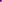

| Manteniendo las Apariencias |
Los Nodos de la apariencia
OK. Como has visto con el objeto FBOX que definimos antes, el nodo Shape tiene un campo dentro suya llamado appearance. Este se usa para contener un nodo Appearance, como se muestra abajo:
DEF FBOX Shape {
appearance Appearance {
material Material {
}
}
geometry Box {
}
}Este ejemplo tiene un campo dentro del nodo Appareance, el campo material. Esta manera de tener nodos dentro de nodos puede parecer complicado, pero te permite definir las apariencias globalmente usando DEF y USE. Esto es útil para tener muchos objetos con la misma apariencia. El nodo Appearance puede contener el campo material o el campo texture. El campo material contiene un nodo Material, sorprendente ¿no?. Un nodo texture contiene uno de varios tipos de nodos de texturas. Éstos se describirán después. Primero, nosotros trataremos el nodo Material.
El Nodo material
El nodo Material puede contener cualquiera de seis campos. Éstos son:
Así, si nosotros queremos hacer nuestro cubo original de un color verde semi-transparente brillando, nosotros le definiríamos una apariencia así:
Shape {
appearance Appearance {
material Material {
emissiveColor 0 0.8 0
transparency 0.5
}
}
geometry Box {
}
}
ImageTexture
Estos bonitos colores estan muy bien, pero para que todo esto luzca mucho mejor, necesitamos mapear una textura a nuestros objetos. Esto lo haremos utilizando el campo del nodo texture del nodo Appearance. Este campo contiene uno de tres tipos de nodo texture.
El primero de éstos que nosotros cubriremos es ImageTexture. Éste es un mapa de textura básico, que traza una imagen inmóvil sobre un objeto. ¡El nodo puede trazar una textura sobre el objeto con formato de archivo JPEG o PNG, es decir que ningún GIF funciona aqui! Algunos navegadores lo soportan, pero esto no es el standard. El nodo contiene tres campos. El primero, el url especifica la imagen para usar en un formato de URL normal. Tu puedes especificar una lista de imagenes dentro de corchetes y el navegador mostrara la primera que encuentre. Los otros dos son repeatS y repeatT que controlan si la textura se repite en la dirección horizontal (S) o en la vertical (T). Estos toman valores booleanos de TRUE (Verdadero) o FALSE (Falso). Sólo son realmente muy útiles cuando se combinan con un TextureTransform que no cubriremos hasta más tarde. Puedes especificar la información de transparencia en las imágenes en cuyo caso reemplazará a la transparencia del objeto original. Si usas una textura en escala de grices, el diffuseColor se multiplicara por la intensidad de la textura hasta crear la textura actual. De hecho, puedes crear muchos efectos combinando el nodo Material e ImageTexture. En general, hacen exactamente lo que esperas de ellos, de modo que experimenta un poco y mira lo que puedes hacer.
Así, para mapear nuestra segunda Caja con una textura de ladrillo, nosotros usaríamos lo siguiente:
Appearance {
texture ImageTexture {
url "brick.jpg"
}
}como el nodo Appareance de nuestra segunda caja.
MovieTexture
MovieTexture toma una película en formato MPEG y la mapea en un objeto de la misma manera que con ImageTexture. Este tiene los mismos tres campos, pero también varios otros. Éstos son:
PixelTexture
Este nodo te permite definir tus propias texturas a mano en el archivo VRML. Esto parece increíblemente ineficaz, pero lo que hace tiene sus usos, como lo verás después. Este tiene un campo image en vez del URL.
El campo image consiste en dos números especificando el ancho y la altura de la textura, seguidos por otro número que aporta el número de los componentes. Los colores con un componente son los de la escala de grices, los colores de dos componentes son los grises con transparencia, tres son el color en RGB, y cuatro son RGB con transparencia. Después de estos argumentos, sigue una lista de pixeles que son los números en hexadecimal con un byte por componente. Así, un pixel de 4 componentes que es rojo y 50% transparente sería 0xFF00007F. Los pixeles se ordenan de abajo-izquierda hacia arriba-derecha. Un ejemplo se muestra debajo:
DEF PIXMAP Appearance {
texture PixelTexture {
image 2 2 3 0xFF0000 0x00FF00 0x0000FF 0xFF0000
}
} Haremos una rápida descripción de números en hexadecimal aquí. A menudo en el mundo de las computadoras, es conveniente especificar los números no en el sistema decimal normal (0-9) o binario (0-1), sino en otro tipo de números, los llamados hexadecimales. Estos toman como base 16, y los números van así:
| Hexadecimal | Decimal |
| 0 | 0 |
| 1 | 1 |
| 2 | 2 |
| 3 | 3 |
| 4 | 4 |
| 5 | 5 |
| 6 | 6 |
| 7 | 7 |
| 8 | 8 |
| 9 | 9 |
| A | 10 |
| B | 11 |
| C | 12 |
| D | 13 |
| E | 14 |
| F | 15 |
Entonces, F en hexadecimal es 15 en decimal. 10 en hex is 16 en decimal. Los números en hexadecimal son normalmente especificados con un 0x en el frente para un reconocimiento fácil. Así, 0x10 = 16, 0xFF = 255, y 0x7F = 127. Has cogido la idea, de eso estoy seguro. No necesitarás usar muchas veces ésto, asi que no te preocupes demasiado por ellos. Luego podrás entenderlos mejor.
El Final está Cerca
Entonces vale, eso es todo sobre el asunto, la descripción y el código de lo que hemos avanzado están aquí, y también un vinculo al archivo WRL. Tenemos dos cajas, como antes, una verde transparente, y otra con una textura de ladrillo. Fíjate que no podemos más usar DEF en el nodo Shape , ya que las cajas tienen texturas diferentes, y ya no son idénticos.
Echa una mirada al efecto global pulsando aquí:
Tutorial Mundo 1.4.
Ése son los fundamentos del color y la textura. Hay info más avanzada después sobre las texturas, acerca de las maneras diferentes de trazarlas, y así sucesivamente pero eso viene después, mucho después.